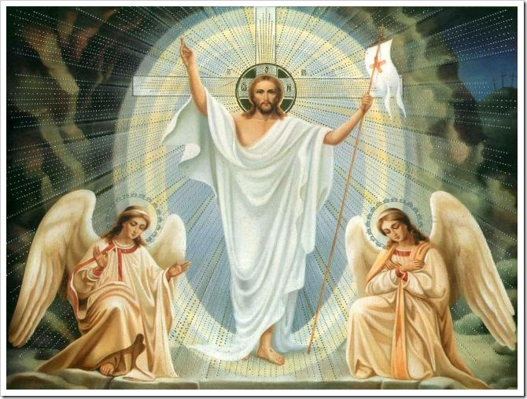
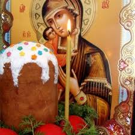
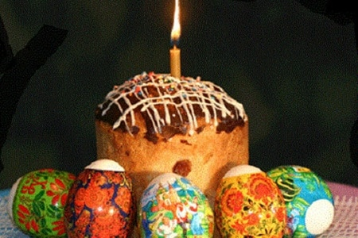
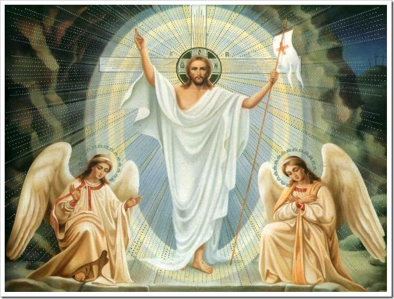
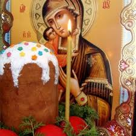
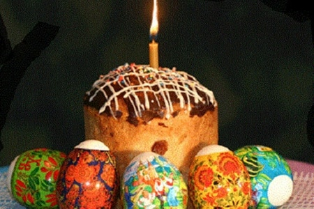

15 04 2012 (1854 дня 8 часов назад)
Христос Воскрес !

Этот величайший праздник стоит особняком в ряду православных праздников. У него есть очень точное народное название - "праздников Праздник".
На третий день после погребения Христа ранним утром в воскресенье несколько женщин (Мария, Саломия, Иоанна...) пошли ко гробу, чтобы принести благовония, предназначенные для тела Иисуса. Подойдя, они увидели, что большой камень, заграждавший вход в гроб, отвален, гроб пуст, а на камне сидит Ангел Господень. Вид Его был как молния, и одежда Его бела как снег. Устрашившись Ангела, женщины пришли в трепет. Ангел же сказал: «Не бойтесь, ибо знаю, что вы ищете: Иисуса распятого. Его нет здесь. Он воскрес, как сказал». Со страхом и радостью поспешили женщины возвестить Апостолам об увиденном. «И се, Иисус встретил их и сказал: радуйтесь! И они, приступив, ухватились за ноги Его и поклонились Ему. Тогда говорит им Иисус: не бойтесь; пойдите, возвестите братьям Моим, чтобы шли в Галилею, и там увидят Меня». И как некогда, Воскресшего увидели Его ученики.

В светлый праздник Пасхи Церковь призывает верующих «очистить чувства и увидеть Христа, сияющего непреступным светом воскресения, и, воспевая победную песнь, услышать ясно от Него: «Радуйтесь!»
«Пусть никто не скорбит о грехах, потому что из гроба воссияло прощение. Пусть никто не страшится смерти, ибо нас освободила смерть Спасителя: ее угасил Тот, Кого она держала в своей власти. Восторжествовал над адом Сошедший во ад. Горько пришлось аду, когда он вкусил Его плоти. ...Принял тело и вдруг попал на Бога; принял землю, а встретил Небо. Он принял то, что видел, и попался на то, чего не видел.
Смерть, где твое жало? Ад, где твоя победа? ...Воскрес Христос — и ни одного мертвого в гробу. Ибо Христос, воскресши из мертвых, положил начало воскресению умерших» (из слова св. Иоанна Златоуста).
Объясняя таинство смерти Христовой, Церковь учит, что по Его положении во гроб и до Светлого Воскресения Христос Сын Божий, Бог и человек, «был во гробе плотию и в аду душою, в раю с разбойником и на престоле со Отцем и Святым Духом, все наполняя как Вездесущий». «Сегодня Владыка пленил ад, освободивши узников, от века там находящихся»,— возглашает Церковь, соприсутствуя в духе Воскресению Христову.
И как некогда кровь закланных агнцев служила знаком обетования Божия евреям, чтобы им, избежав кары, постигшей египтян, выйти из Египта и войти в Землю Обетованную (слово «пасха» значит — переход), так Христос — «новая Пасха, живая Жертва, Агнец Божий, принявший на Себя грех мира» — Своею кровью заключил Новый Завет, положив начало переходу Народа Божия к Воскресению и вечной жизни.
Пасха, Господня Пасха! От смерти бо к жизни и от земли к небеси Христосе Бог нас приведе, победную поющия! Христос воскрес из мертвых, смертию смерть поправ, и сущим во гробех живот даровав! (Тропарь, глас 5-й).


Этот величайший праздник стоит особняком в ряду православных праздников. У него есть очень точное народное название - "праздников Праздник".
На третий день после погребения Христа ранним утром в воскресенье несколько женщин (Мария, Саломия, Иоанна...) пошли ко гробу, чтобы принести благовония, предназначенные для тела Иисуса. Подойдя, они увидели, что большой камень, заграждавший вход в гроб, отвален, гроб пуст, а на камне сидит Ангел Господень. Вид Его был как молния, и одежда Его бела как снег. Устрашившись Ангела, женщины пришли в трепет. Ангел же сказал: «Не бойтесь, ибо знаю, что вы ищете: Иисуса распятого. Его нет здесь. Он воскрес, как сказал». Со страхом и радостью поспешили женщины возвестить Апостолам об увиденном. «И се, Иисус встретил их и сказал: радуйтесь! И они, приступив, ухватились за ноги Его и поклонились Ему. Тогда говорит им Иисус: не бойтесь; пойдите, возвестите братьям Моим, чтобы шли в Галилею, и там увидят Меня». И как некогда, Воскресшего увидели Его ученики.

В светлый праздник Пасхи Церковь призывает верующих «очистить чувства и увидеть Христа, сияющего непреступным светом воскресения, и, воспевая победную песнь, услышать ясно от Него: «Радуйтесь!»
«Пусть никто не скорбит о грехах, потому что из гроба воссияло прощение. Пусть никто не страшится смерти, ибо нас освободила смерть Спасителя: ее угасил Тот, Кого она держала в своей власти. Восторжествовал над адом Сошедший во ад. Горько пришлось аду, когда он вкусил Его плоти. ...Принял тело и вдруг попал на Бога; принял землю, а встретил Небо. Он принял то, что видел, и попался на то, чего не видел.
Смерть, где твое жало? Ад, где твоя победа? ...Воскрес Христос — и ни одного мертвого в гробу. Ибо Христос, воскресши из мертвых, положил начало воскресению умерших» (из слова св. Иоанна Златоуста).
Объясняя таинство смерти Христовой, Церковь учит, что по Его положении во гроб и до Светлого Воскресения Христос Сын Божий, Бог и человек, «был во гробе плотию и в аду душою, в раю с разбойником и на престоле со Отцем и Святым Духом, все наполняя как Вездесущий». «Сегодня Владыка пленил ад, освободивши узников, от века там находящихся»,— возглашает Церковь, соприсутствуя в духе Воскресению Христову.
И как некогда кровь закланных агнцев служила знаком обетования Божия евреям, чтобы им, избежав кары, постигшей египтян, выйти из Египта и войти в Землю Обетованную (слово «пасха» значит — переход), так Христос — «новая Пасха, живая Жертва, Агнец Божий, принявший на Себя грех мира» — Своею кровью заключил Новый Завет, положив начало переходу Народа Божия к Воскресению и вечной жизни.
Пасха, Господня Пасха! От смерти бо к жизни и от земли к небеси Христосе Бог нас приведе, победную поющия! Христос воскрес из мертвых, смертию смерть поправ, и сущим во гробех живот даровав! (Тропарь, глас 5-й).
